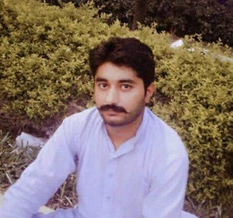

S.S.C
Gujranwala Board
The Secondary School Certificate, also called SSC or Matriculation examination, in madrasah education Dakhil is a public examination in Pakistan.
Grade: A
Software Engineer
To succeed in an environment of growth and excellence and earn a job which provides me job satisfaction and self-development and help me achive personal as well as organizational gols.


Gujranwala Board
The Secondary School Certificate, also called SSC or Matriculation examination, in madrasah education Dakhil is a public examination in Pakistan.
Grade: A
Punjab Board of Technical Education Lahore
Civil engineering is a professional engineering discipline that deals with the design, construction, and maintenance of the physical and naturally built environment, including public works such as roads, bridges, canals, dams, airports, sewerage systems, pipelines, structural components of buildings, and railways.
Grade: A+
Gift University Gujranwala
Software engineering is the systematic application of engineering approaches to the development of software.
CGPA: 2.5
Gujranwala Flyover at Aziz Cross GT Road
I work as side superwiser at Azad cross flyover Gujranwala for one year.
Gift University Gujranwala
Smart Shopping cart — FYP We create smart shopping in As our FYP project we use machine learning technique ,web development,android development and IOT.